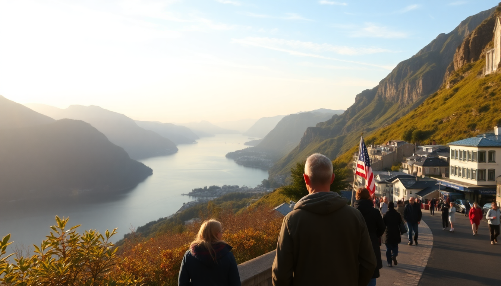

Best Day Trips from Bergen: Fjords, Flåm & Voss

We spent four days based in Bergen, and every single morning we had the same debate: do we stay and explore the city, or do we chase the fjords? The city won twice. The fjords won twice — and honestly, the fjord days were the ones we still talk about. The problem is that Bergen’s day-trip options all look identical on paper: boat, train, fjord, repeat. They are not the same. Here’s what we learned, what we’d do again, and what we’d skip.
What is the classic Norway in a Nutshell route and is it worth it?
The Norway in a Nutshell route is the most famous day trip from Bergen, and for good reason. It combines the Bergen Railway, the Flåm Railway, a fjord cruise on the Nærøyfjord, and a bus ride through Gudvangen. We booked it through Vy and Fjord Tours directly, and the entire loop took about 12 hours door-to-door from Bergen.
Is it worth it? Yes, but with a caveat. The logistics are flawless — every connection lines up, and you never feel rushed. The Bergen Railway from Bergen to Myrdal is comfortable and scenic, but the real magic starts when you switch to the Flåm Railway at Myrdal station. That 20-kilometer descent from 866 meters to sea level is the steepest standard-gauge railway in Europe, and it delivers. We sat on the right side of the train heading down, and we got the best views of the Kjosfossen waterfall without even leaving our seats.
The fjord cruise from Flåm to Gudvangen on the Nærøyfjord is the payoff. The boat is a hybrid-electric catamaran, which means it’s quiet — you actually hear the waterfalls and the birds. We passed through the narrowest point of the fjord, and the cliffs felt close enough to touch. The whole day is long, but it’s the single most efficient way to see the fjords if you only have one day.
- Bergen Railway — depart early (we took the 8:00 AM train) to avoid crowds
- Myrdal station — high mountain pass, tiny platform, cold even in summer, bring a layer
- Flåm Railway — sit on the right side going down, left side going up
- Kjosfossen waterfall — the train stops here for photos, and the music-and-dancing show is cheesy but fun
- Nærøyfjord cruise — the boat is quiet, dress for wind, and grab a window seat on the lower deck for the best photos
Is the Flåm railway better as a round trip or as part of a loop?
We did the full loop, but we also met travelers who took the Flåm Railway from Myrdal to Flåm and then just turned around and went back. That’s a mistake. Flåm village itself is tiny — it has a bakery, a few souvenir shops, a hotel, and a small harbor. We wandered the entire place in under an hour, and honestly, we were bored. The village is a staging point, not a destination.
The loop, though, is different. You arrive in Flåm by train, board the boat, and then take the bus from Gudvangen back through the Stalheimskleiva switchbacks. That bus ride is the hidden gem of the whole route. The road is so narrow and steep that the bus has to stop and reverse at several hairpin turns, and the views down into the valley are absurd. We sat on the left side of the bus and had a clear view of the Stalheim Hotel perched on the cliff edge above us.
If you do the round trip, you miss the bus, you miss Gudvangen, and you miss the Stalheim viewpoint. Do the loop. It costs about the same, and you get three different modes of transport instead of just one.
- Flåm village — the Ægir Brewery has good local beer, but the food is overpriced; grab a cinnamon roll at Flåm Bakery instead
- Gudvangen — the Viking village is a tourist attraction, but the fjord-side walking path is free and peaceful
- Stalheimskleiva — 13 hairpin bends, built in 1842, still one of the most dramatic roads in Norway
- Stalheim Hotel — you won’t stay here, but the terrace viewpoint is worth a quick stop if the bus lets you off
What is the best fjord cruise from Bergen itself?
If you don’t want to deal with trains and buses, there are direct fjord cruises from Bergen harbor. We took the most popular one: a three-hour cruise to the Mostraumen, a narrow strait at the end of the Osterfjord. The boat leaves from the fish market area in Bergen, and it’s the easiest day trip you can do — no transfers, no timetables, just show up and sail.
The cruise is scenic, but here’s the honest take: it’s the weakest of the three fjord experiences we did. The Osterfjord is beautiful, but it’s not the Nærøyfjord. The cliffs are lower, the water is wider, and the whole thing feels more like a lake tour than a fjord adventure. The highlight is when the boat turns around at the Mostraumen waterfall — the captain gets close enough that you feel the spray. But we spent a lot of the cruise just waiting for that moment.
Where this cruise wins is convenience. We booked it through GetYourGuide with a departure at 10:00 AM, and we were back in Bergen by 1:30 PM with the whole afternoon free. If you’re short on time, or if you’re traveling with kids who won’t survive a 12-hour day, this is the choice. If you want the dramatic, postcard fjord experience, do the Norway in a Nutshell loop instead.
- Osterfjord — wide, calm, and less dramatic than the Sognefjord branch
- Mostraumen — the waterfall at the turnaround point is the only real highlight
- Bergen fish market — the departure point is right here, and the outdoor stalls are worth a wander before you board
- Rødne Fjord Cruise — the operator we used; the boat has a heated indoor lounge and a small café
What is there to do in Voss for a day trip?
Voss is often skipped in favor of Flåm, but we spent a full day there, and it was the most active of our day trips. Voss is about 90 minutes from Bergen by train on the Bergen Railway, and it’s the adventure sports capital of the region. We went in summer, so we tried white-water rafting on the Strandaelva River with Voss Rafting — and it was genuinely thrilling, not a tame float. The river has Class III and IV rapids, and our guide kept us paddling the whole way.
The town of Voss itself is small. The main square has a church from 1277, a few cafés, and a tourist office. We had lunch at Fleischer’s Hotel, a historic property right by the lake, and the salmon sandwich was decent but nothing special. The real reason to come to Voss is the outdoor stuff: rafting, kayaking, paragliding, and mountain biking. We also took the gondola up to Hangursfjellet, and the view over the lake and the surrounding peaks was the best panorama of the entire trip — better than anything we saw from the fjord boats.
If you’re into extreme sports, Voss is worth a full day. If you’re not, it’s still a good half-day stop, but I wouldn’t dedicate an entire day to just the town.
- Voss Rafting — book the morning session; the water is calmer and the crowds are smaller
- Hangursfjellet gondola — the upper station has a café and a viewing platform; the hike to the summit takes about 30 minutes
- Fleischer’s Hotel — historic lakeside hotel, good for a coffee stop, not for a meal
- Voss Church — one of the oldest stone churches in Norway, worth a quick look inside
- Strandaelva River — the rafting put-in is about 10 minutes from town, wetsuits and helmets provided
How do you get from Bergen to Flåm and Voss without a tour?
You don’t need to book a package tour. We did both day trips independently, and it was easy. For Flåm, take the Bergen Railway from Bergen station to Myrdal, then transfer to the Flåm Railway down to Flåm. The entire journey takes about two and a half hours each way. Book your seats in advance on the Vy app — the Flåm Railway sells out, especially in summer.
For Voss, it’s simpler. The Bergen Railway stops in Voss directly, and the journey is about 90 minutes. Trains run roughly every hour, and you can buy tickets on the Vy app right up to departure. We booked the last train back to Bergen at 7:00 PM, which gave us a full day without any stress.
One thing we learned the hard way: the train tickets for the Bergen Railway and the Flåm Railway are separate. The Norway in a Nutshell package bundles them, but if you book independently, you need to buy two tickets. Also, the Flåm Railway is not covered by the Eurail pass — you have to pay extra, and it’s worth every krone.
- Bergen station — arrive 20 minutes early, the platforms are clearly marked
- Vy app — the official Norwegian railway app, works for both train lines
- Flåm Railway ticket — book on the Vy app or at the station, but the app is easier
- Voss station — the gondola is a 10-minute walk from the platform, follow the signs
When is the best time of year to do these day trips?
We went in late June, and the weather was a mixed bag. Bergen gets rain about 240 days a year, and we had two sunny days and two rainy days. The fjord cruise in the rain was actually more atmospheric — the waterfalls were fuller, and the clouds rolling over the cliffs made everything look moodier. But the train ride up to Myrdal in the rain meant we saw almost nothing from the windows. The clouds were right at eye level.
If you want the best chance of clear views, go in May or September. The summer months of July and August are the busiest, and the Flåm Railway and the fjord boats are packed. We went in June and it was busy but manageable. The shoulder seasons have fewer crowds and lower prices, but some of the adventure operators in Voss only run from mid-May to mid-September.
One practical note: layers. Even in June, we needed a fleece, a rain jacket, and a warm hat on the fjord boat. The wind on the water is cold, and the temperature drops noticeably at Myrdal, which sits at 866 meters. Bring a backpack with a dry bag for your electronics — the spray on the boat is real.
- May to September — the full range of tours and transport options are running
- June and July — the longest daylight hours, but also the biggest crowds
- September — autumn colors in the fjord valleys, fewer tourists, still mild
- Winter — the Flåm Railway runs but the fjord cruise is limited, and Voss becomes a ski town
FAQ
Is Norway in a Nutshell too touristy? It’s touristy, yes, but it’s touristy for a reason. The route is well-designed, the connections are seamless, and the scenery is genuinely world-class. We saw plenty of other travelers, but it never felt overcrowded or rushed. The only part that felt like a tourist trap was the Viking village in Gudvangen — skip it and walk the fjord-side path instead.
Can you do Flåm and Voss in the same day? Technically, yes, but we wouldn’t recommend it. The train from Flåm back to Myrdal, then to Voss, then back to Bergen, adds up to over six hours of train time. You’d have about two hours in each place, which is not enough to do anything meaningful. Pick one and give it a full day.
Do you need to book day trips from Bergen in advance? For the Norway in a Nutshell route, yes — book at least a few days ahead in summer. The Flåm Railway sells out, and the fjord boats fill up. For Voss, you can book the train on the day, but the rafting and gondola tours should be booked in advance. We booked everything about a week out, and we had no issues.
Conclusion
- Do the Norway in a Nutshell loop — it’s the best single-day fjord experience, and the bus ride through Stalheimskleiva is the unexpected highlight.
- Skip the direct fjord cruise from Bergen if you have more than one day — it’s convenient, but it pales in comparison to the Nærøyfjord.
- Spend a day in Voss if you want action — rafting and the gondola ride are worth the train trip.
- Pack for all four seasons in one day — a rain jacket, a warm layer, and a dry bag for your phone are non-negotiable.
- Book your Flåm Railway tickets in advance — this is the one part of the trip that sells out, and you don’t want to be stuck in Myrdal with no way down.